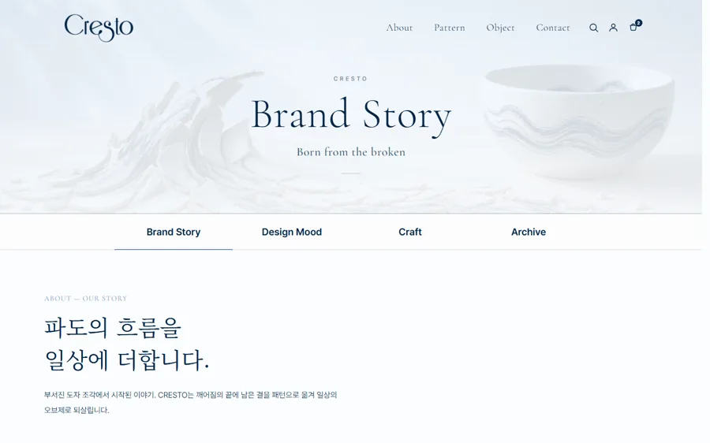
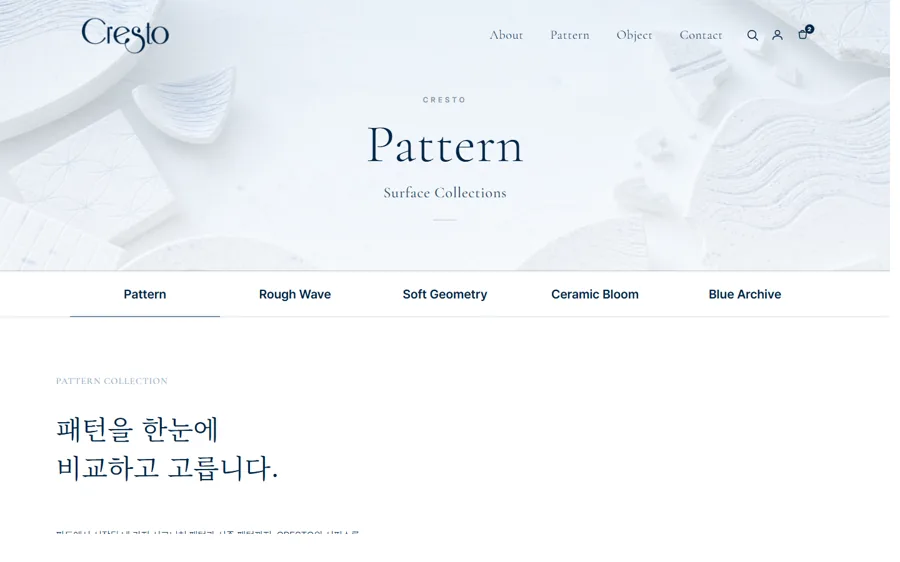
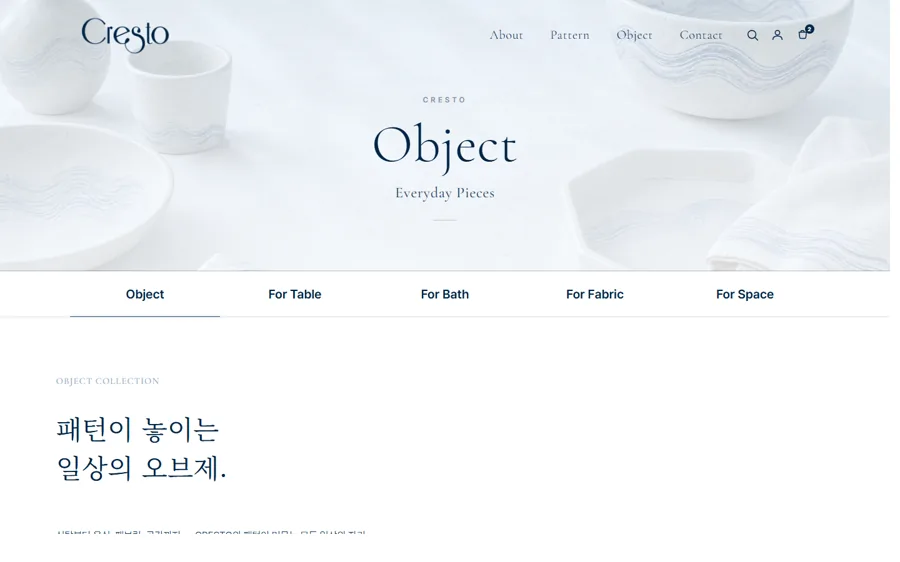
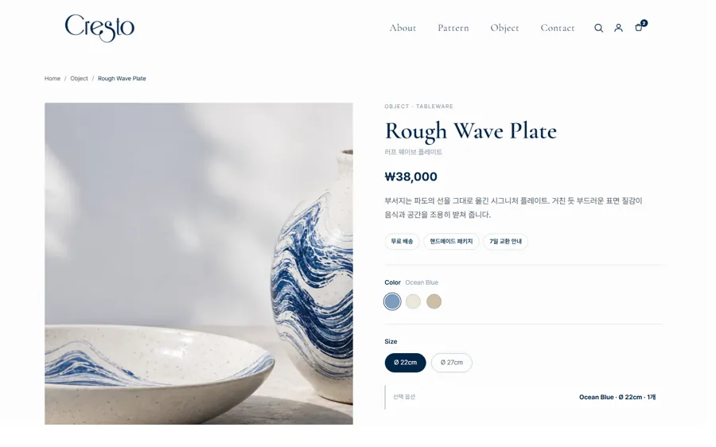

Overview
부서짐의 끝에서 태어나다
파도·도자기·불완전함에서 나온 패턴을 다루는 세라믹 공예 브랜드 Cresto의 브랜드 커머스 사이트입니다. 브랜드 서사부터 패턴·오브제 카탈로그, 상품 상세·장바구니·주문·마이페이지까지 30여 개 화면을 하나의 미니멀 톤으로 설계하고 실제 동작까지 구현했습니다.
차분한 네이비·옅은 블루·웜 화이트로 공예의 고요함을 담아, 상품보다 작품을 보는 듯한 경험을 목표로 아트디렉션했습니다.
Problem & Goal
왜 이렇게 만들었나
평범한 쇼핑몰이 아니라, 작품을 감상하듯 둘러보는 브랜드 사이트를 목표로 방향을 먼저 정리했습니다.
Design Guide
디자인 가이드
차분한 공예 브랜드 무드를 28개 페이지에 일관되게 유지하기 위해 키워드부터 컬러·타이포·컴포넌트까지 규칙을 정의하고 토큰으로 관리했습니다.
고요하고 절제된 공예의 감성을 담기 위해 minimal · editorial · calm을 중심 키워드로 잡고 모든 페이지의 톤 기준으로 삼았습니다.
딥 네이비를 핵심으로, 옅은 블루와 웜 화이트를 넓게 사용해 차갑지만 따뜻한 대비를 만들었습니다. 낮은 채도로 도자·직물 이미지가 주인공이 되도록 했습니다.
#FCFCFC
#F4F7FB
#012547
#2E5E86
#16233A
영문 제목은 Cormorant Garamond(세리프), 본문은 Pretendard(산세리프)로 조합해, 우아한 무드와 또렷한 정보 전달의 균형을 맞췄습니다.
큰 여백의 이미지 카드, 얇은 라인 탭 내비, 네이비 버튼, 세리프 키커를 반복 사용해 룩북 같은 에디토리얼 통일감을 유지했습니다.
Screens & Flow
화면 구성 · 흐름
브랜드 서사에서 패턴·오브제 카탈로그, 상품 상세로 이어지는 둘러보기 흐름으로 설계했습니다. 아래는 핵심 화면 흐름입니다.




Build
구현 포인트
30여 페이지 브랜드 커머스
홈·About·패턴/오브제 카탈로그·상품 상세·장바구니·주문·마이페이지까지 하나의 공유 구조로 구성.
실제 동작하는 쇼핑 흐름
localStorage 기반으로 장바구니·주문서·주문 완료·위시리스트·최근 본 상품·주문 내역을 실제로 동작하도록 구현(무료배송 실시간 계산 포함).
인터랙션 · 모션
Swiper 히어로 영상, 섹션 퀵네비 dot, 스크롤 진행바, IntersectionObserver 등장 애니메이션(reduced-motion 존중).
디자인 토큰 · 반응형
:root 토큰과 단일 소스 내비/푸터(js/main.js)로 전 페이지 톤을 통일하고, Grid·Flexbox로 PC·모바일을 완전 반응형 대응.
Challenges
막혔던 부분 · 해결
PROBLEM백엔드 없이 30여 페이지에서 장바구니·주문 상태를 어떻게 유지할까?
해결 → localStorage 기반 상태관리로 장바구니·주문서·위시리스트·최근 본 상품·주문 내역을 전 페이지에서 일관되게 유지했습니다.
PROBLEM공예 브랜드의 ‘고요한’ 무드를 해치지 않으면서 인터랙션을 넣고 싶다.
해결 → Swiper 히어로와 IntersectionObserver 등장 애니메이션을 절제해 적용하고, reduced-motion을 존중해 과하지 않게 연출했습니다.
PROBLEM페이지가 많아질수록 톤·내비게이션이 어긋나기 쉽다.
해결 → :root 디자인 토큰과 단일 소스 내비/푸터(js/main.js)로 30여 페이지의 톤과 구조를 하나로 통일했습니다.
Results
숫자로 보는 작업
Review
돌아보며
공유 CSS·토큰으로 30여 페이지의 톤을 맞추고, 장바구니·주문·마이페이지까지 실제로 동작하도록 완성한 뒤 GitHub Pages에 배포한 프로젝트입니다. 과정을 배운 점·아쉬운 점·개선 방향으로 정리했습니다.
배운 점
여러 페이지를 공유 CSS·디자인 토큰과 단일 소스 내비/푸터로 관리하며, 시스템으로 대규모 사이트의 일관성을 유지하는 방식을 익혔습니다. localStorage로 장바구니·주문 상태를 직접 다뤄봤습니다.
아쉬운 점
백엔드가 없어 결제·주문이 localStorage 기반 데모에 머문 점, 실제 결제·배송 연동까지는 가지 못한 점이 아쉽습니다.
개선 방향
실제 결제·주문 API를 붙이고, 상품 검색·필터를 고도화해 데모를 넘어 운영 가능한 커머스로 발전시키고 싶습니다.